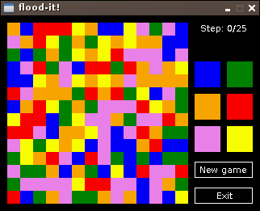

За два дня написал свою первую игру на SDL. Это клон игры flood-it. Работает на Caanoo и линуксе, но скомпилировать можно и для других систем.

Цель игры: Начиная с левого верхнего угла и перекрашивая прилегающие квадраты заполнить всё поле одним цветом. На это дается 25 ходов.
Скачать: версии для Caanoo, Linux, исходный код.